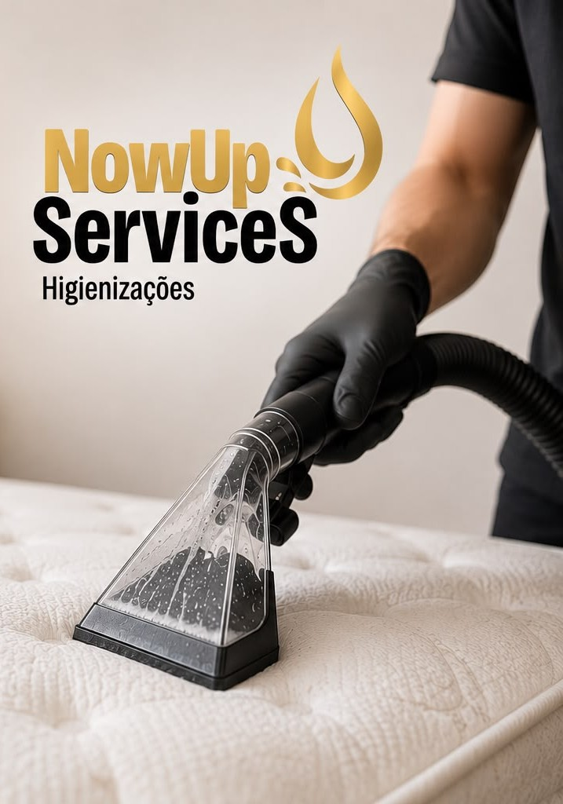
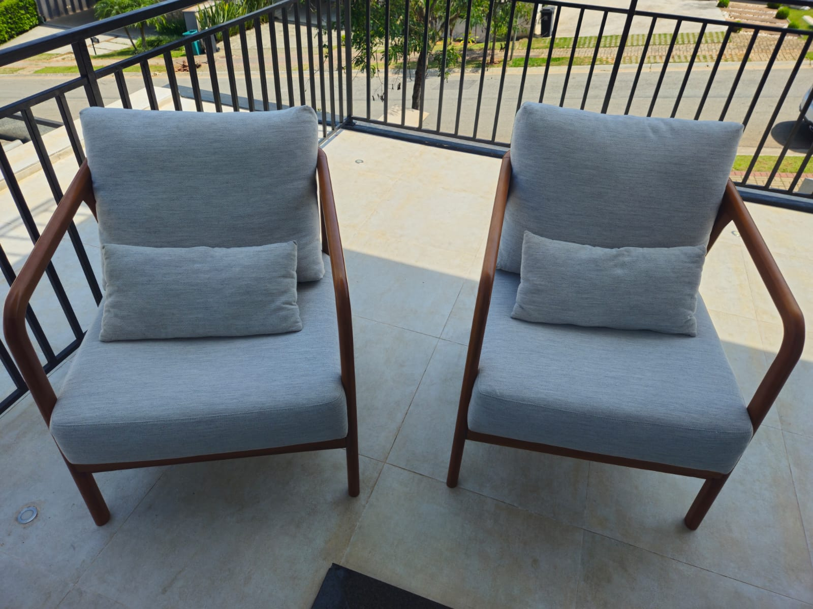

Sofás, Poltronas e Puffs
Limpeza profunda com extratora profissional que remove sujeiras, manchas, odores, ácaros e bactérias do seu sofá, poltrona ou puff. Resultado visível e duradouro.
Solicitar orçamentoHigienizamos e impermeabilizamos estofados com tecnologia e produtos de alta qualidade, eliminando sujeiras, ácaros e odores.
Higienizamos estofados com tecnologia e produtos de qualidade, eliminando sujeiras, ácaros e odores.
Impermeabilização que protege contra líquidos, manchas e sujeiras.
Na Nowup Services, acreditamos que um ambiente limpo é sinônimo de conforto, bem-estar e qualidade de vida. Com mais de 3 anos de experiência no mercado, somos especialistas em higienização e impermeabilização de estofados, oferecendo serviços de alta qualidade para residências e empresas.
Ao longo da nossa trajetória, já atendemos mais de 500 clientes com excelência e realizamos mais de 2.000 serviços, sempre prezando pela confiança, pontualidade e satisfação de cada cliente.
Nossa missão é devolver a beleza, a limpeza e a proteção dos seus estofados, utilizando técnicas profissionais e produtos de qualidade para garantir resultados duradouros.
Nowup Services: renovando seus estofados, protegendo seu investimento e cuidando do seu bem-estar.
✨ Mais que limpeza, entregamos conforto e tranquilidade para sua família.

Peças Higienizadas
Clientes Atendidos
Satisfação Garantida
Anos de Experiência
Limpeza profunda que elimina ácaros, bactérias e odores do seu estofado com equipamentos de alta tecnologia.
Ambiente mais limpo e saudável para sua família.
📋 Solicitar OrçamentoAplicação de produtos que criam uma barreira protetora contra líquidos, manchas e sujeiras no seu estofado.
Mais durabilidade e proteção para seu investimento.
📋 Solicitar OrçamentoDevolvemos a beleza e o frescor do seu sofá, colchão ou cadeira, deixando-os com aparência e cheiro de novo.
Um estofado sempre renovado e apresentável.
📋 Solicitar OrçamentoAgende agora e receba um orçamento gratuito. Atendemos hoje mesmo em toda a região.

Limpeza profunda com extratora profissional que remove sujeiras, manchas, odores, ácaros e bactérias do seu sofá, poltrona ou puff. Resultado visível e duradouro.
Solicitar orçamento
Eliminação de ácaros, fungos e bactérias com processo de higienização a vapor e produtos antialérgicos. Ideal para famílias com crianças e pessoas alérgicas.
Solicitar orçamento
Limpeza de cadeiras de jantar, escritório, home theater e demais assentos estofados. Remoção de gordura, manchas e odores com acabamento impecável.
Solicitar orçamento
Lavagem profunda de carpetes residenciais e comerciais, tapetes persas, decorativos e de área. Remoção de manchas difíceis e restauração da cor original.
Solicitar orçamento
Higienização, hidratação e proteção de sofás, poltronas e demais móveis em couro natural ou sintético. Tratamento especial que devolve o brilho e previne rachaduras.
Solicitar orçamentoOferecemos uma linha completa de higienização para todos os tipos de estofados e tecidos do seu lar ou empresa.


"Meu sofá parecia novo! Tiraram manchas que eu já achei que eram permanentes. Super recomendo o serviço, muito profissionais."
"Higienizei o colchão do meu filho que tem alergia. Resultado incrível, ele parou de ter crises! Atendimento pontual e educado."
"Serviço excelente! Limparam o carpete da minha sala que estava muito sujo. Ficou como novo em poucas horas."
"Contratei para higienizar o sofá de couro do escritório. Trabalho impecável, produto de qualidade e prazo cumprido."
"Melhor investimento que fiz! As cadeiras de jantar estavam horrosas e ficaram perfeitas. Vou chamar novamente com certeza."
"Indiquei para toda a família. Trabalho rápido, produto sem cheiro forte e resultado surpreendente. Nota 10!"
O tempo de secagem varia de 2 a 6 horas dependendo do tipo de estofado, espessura do tecido e ventilação do ambiente. Utilizamos equipamentos que aceleram a secagem para que você possa usar o estofado no mesmo dia.
Sim! Utilizamos apenas produtos biodegradáveis, hipoalergênicos e certificados, seguros para crianças, bebês e animais de estimação. Todos os produtos são aprovados pela ANVISA.
Sim, todo o nosso serviço é realizado no conforto da sua casa ou empresa. Nossa equipe leva todo o equipamento necessário para realizar a higienização no local, sem precisar remover o móvel.
Recomendamos a higienização a cada 6 meses para residências comuns. Para lares com crianças pequenas, animais de estimação ou pessoas alérgicas, a frequência ideal é a cada 3 a 4 meses.
Na maioria dos casos sim. Temos produtos e técnicas específicas para manchas de café, vinho, gordura, tinta e outras substâncias. O resultado pode variar conforme o tempo da mancha e o tipo de tecido, mas sempre fazemos o possível para removê-la.
É simples! Entre em contato pelo WhatsApp informando o tipo de estofado, a quantidade de peças e sua localização. Respondemos rapidamente com um orçamento personalizado e agendamos conforme sua disponibilidade.
Higienização profissional que transforma seu ambiente
Preencha o formulário e entraremos em contato rapidamente com as melhores condições para você.